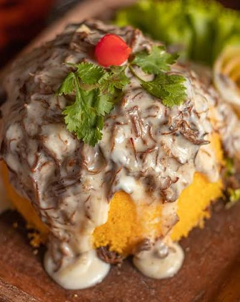

Cuscuz com carne de sol na nata
Uma das combinações mais icônicas e afetivas da culinária nordestina. O contraste da massa de milho quentinha com a suculência da carne envolta na nata fresca cria um prato irresistível

O melhor da culinária nordestina
Clique para ver a receita completa